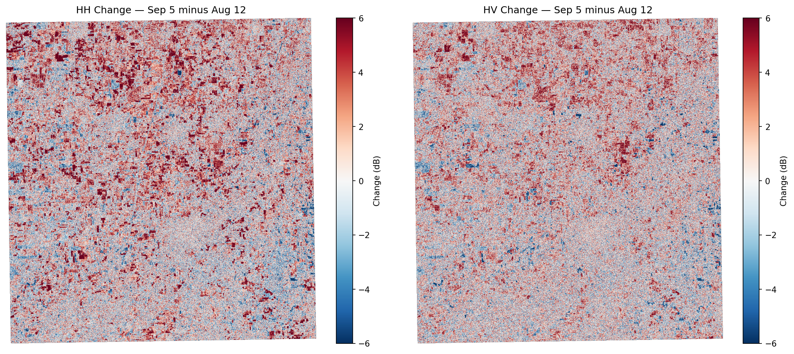

01 / NISAR OBSERVATIONSREAL DATA PREVIEW

Discover what radar sees when optical satellites cannot. Explore real NISAR surface changes in Pakistan, with transparent scientific evidence.
Exploratory radar-change screening. Not confirmed flooding.
Real geospatial radar-change candidates and independent flood-reference detections. Select a case study, explore layers, and inspect clusters.
Explore original NISAR scientific previews and the meaning behind different radar responses.

SAR operates day and night and is not blocked by clouds the way visible-light observations are.
A low radar return can come from smooth water, soil, roads and other surfaces. Evidence must be interpreted carefully.
GFM, Sentinel-2 and historical JRC water maps help assess possible interpretations and their uncertainty.
Sentinel-2 optical screening covered 4,759 of 5,679 Jatoi candidate pixels (83.8%). No open-water signal was detected among those screened candidate pixels on 4 September. This does not rule out all types of flooding.
Jatoi, 17 June–13 November 2026 (150 days). Sentinel-2 scenes were assessed using an 80% AOI-clear and coverage threshold. These are preliminary SCL-based classifications, not a count of all cloudy days.
56 usable · 12 obstructed · 82 no observation. This bar shows aggregated counts, not a date-by-date calendar.
Known Jatoi NISAR study acquisitions: 12 August and 5 September 2026 (not a complete pass inventory). The earlier 83.8% metric is separate: Sentinel-2 optical screening coverage of radar-candidate pixels on 4 September.
Select a date for its measured clear fraction. Rings mark known NISAR study acquisitions, not all radar passes.
Loading daily observations…
Exploratory, SCL-based 80% clear-area threshold. No observation does not mean clouds. Known NISAR passes are an incomplete inventory; some exactly 100% clear values warrant independent quality review.
Independent reference checks are shown as they came out. NISAR radar-change candidates did not reproduce the GFM flood reference, so no flood-detection accuracy is claimed.
27 August GFM and 5 September NISAR differ by nine days. The 4 September GFM product covers only 87 candidate pixels. Neither check establishes September 5 flood-detection accuracy.
Negative optical evidence at the observed locations cannot exclude shallow or vegetation-covered floodwater.
In the separate SE test, recall was 60.98%, but precision was only 0.11% (50 matches and 45,478 false alarms). GFM is a satellite estimate, not ground truth. Do not use this prototype for emergency decisions.
Evidence categories describe cross-check availability, not numerical flood probability. No individual Jatoi candidate is confirmed as flooded.
A radar candidate spatially agrees with an independent GFM flood estimate on a suitably timed, valid reference grid. Agreement alone is not ground confirmation.
NISAR identifies a surface change, but available cross-checks do not independently establish flooding. This applies to the current Jatoi candidate layer.
Reference coverage, clear optical observations, or acquisition timing is inadequate to test the flood interpretation. Missing observations are not negative flood evidence.
5,679 radar-change candidate pixels. Zero overlap with 310 GFM flood-reference pixels in the eligible 27 August comparison. August 12 / September 5 NISAR timing differs from GFM.
12–24 July NISAR vs 22 July GFM: 135 matches, 52,638 non-matches flagged, 8.59% recall, 0.256% precision and 0.497% F1 for a fixed HH/HV darkening rule. Regional diagnostic, not verification of individual map polygons.
Scientific limits: GFM is an independent satellite flood estimate, not field ground truth. Reference dates may differ by two or more days. Advisory flags, exclusion coverage, and low flood prevalence affect comparison; no operational flood alert is provided.
NASA NISAR GCOV Provisional V1, Copernicus GFM Sentinel-1 flood reference, Sentinel-2 L2A and JRC Global Surface Water. GFM is independently generated satellite evidence, not verified ground truth.
An open scientific workflow with traceable observations and explicit limitations.
NISAR L-band radar acquisitions and timestamps.
HH/HV intensity, frame mosaics, alignment and masking.
Surface-change candidates on interactive maps.
Compare with independent references and report uncertainty.
Under the Clouds is a research prototype from real satellite data. It helps people explore surface changes but does not issue hazard warnings or claim confirmed flood boundaries. Use official agencies for emergency decisions.